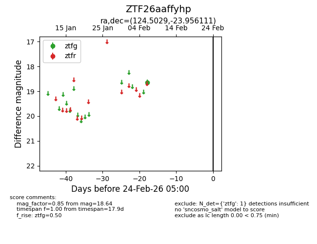
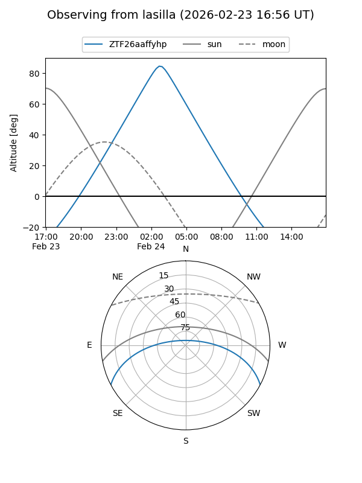
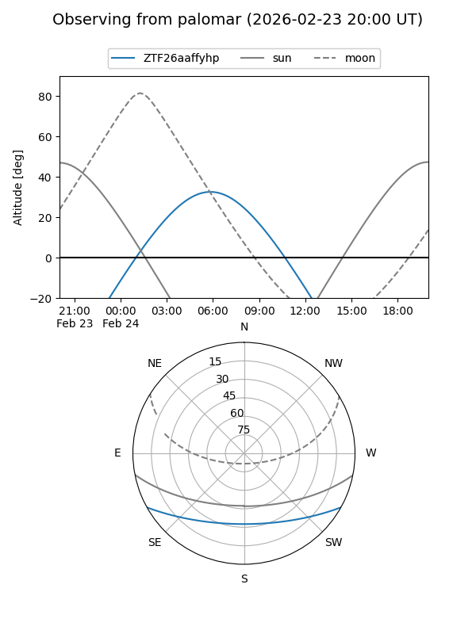

ZTF26aaffyhp
Target ZTF26aaffyhp at 2026-02-24 09:08
Aliases and brokers:
FINK: link
Lasair: link
ALeRCE: link
alt names
ZTF26aaffyhp (ztf,fink_ztf)
Coordinates:
equatorial (ra, dec) = 124.5029,-23.95611
equatorial (HMS+DMS) = 08:18:00.70,-23:57:22.00
galactic (l, b) = (244.1630,+6.59386)
Flags:
Photometry:
last ztfg=18.64
1 ztfg detections
Lightcurve

Visibility


Additional plots